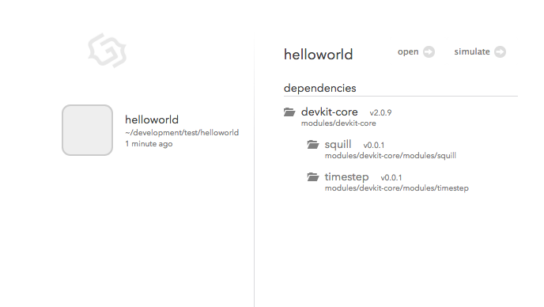
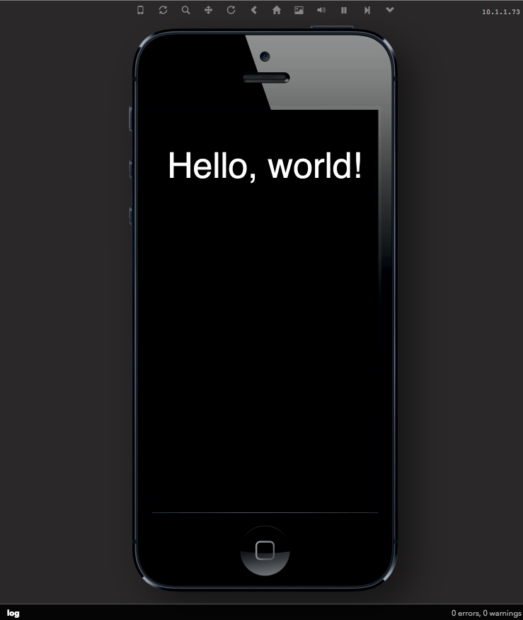
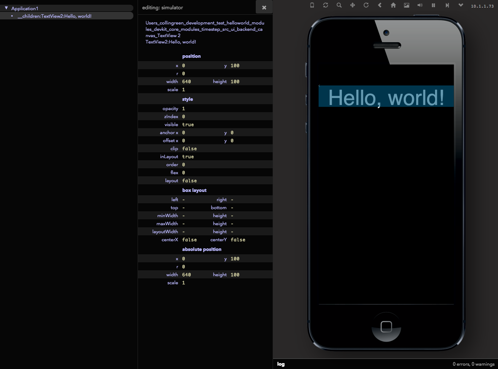

2. Quick Start: Hello, World!
Create your first project
With devkit installed, you’re ready to create a new project! Open up a terminal and navigate to the directory where you would like to start your project and run devkit init hello-world ~
This creates the ./hello-world/ directory at the current working path, and generates a new application that inherits from the “empty” template. Now you can start the devkit simulator, which should show your new ‘hello-world’ application on the left.
$ devkit serveBy default, devkit starts a server on your machine at the address http://localhost:9200. To access the interface for the project, simply direct your web browser to this url. If you’d like to specify an alternative port for your application server, just pass it as a -p option:
$ devkit serve -p 8080So in this case, the web interface can be accessed at the url http://localhost:8080.
Note: To get the most out of debugging in the web browser, we’re primarily supporting the Chrome web browser. So for the remainder of this guide we’ll assume you are using that.
With the server running and loaded in your web browser, you should see all your registered devkit projects. Select your newly created game, click it, and you will see the current information for your project, including the list of dependencies.
To change the title of your project, edit the manifest.json file located in the root of your project directory—you can find a complete list of project settings in the Manifest Options Guide.

With the project loaded, launch the simulator for it by clicking the Simulate button located in the upper-right corner.

Here is your first application running in the browser! Pretty cool, right?
The simulator is an approximation of how your game will behave when running on a mobile device. But, we’re still in a web browser, which means we can interact with it, debug it, and use all the great web development tools we’re used to when creating the game. Hey, guess what, we can do those on native too!
Note: If you’re working on a project that wasn’t created with devkit init (maybe you’ve downloaded it from elsewhere), you must install devkit in the project before it’s available in your web interface. To do this, use the devkit install command in the root folder of your project:
$ cd ./anotherproject
$ devkit installA list of registered projects is maintained in the config.json file located in the root of your devkit install and can be edited directly.
Devkit Help
The devkit tool has a number of commands to help you in creating, building, and deploying your game. For a list of available commands, run devkit help or devkit -h in your terminal.
In addition, each devkit command may have its own options. You can append the -h flag to a command to see the help available for it:
$ devkit init -hProject Structure
When you initialize a new game, a devkit project is created using the following directory structure:
project/
.
├── manifest.json (project settings)
├── sdk/ -> /path/to/devkit/sdk (symlink to game engine libraries)
├── build/ (auto-generated by devkit)
├── modules/ (auto-generated by devkit - this is where devkit-core lives, plus any addons)
├── resources/ (game assets)
│ └── fonts/
└── src/
└── Application.js (project entry point)For the most part, you’ll be most interested in the files contained in the src directory, since any files you create for your game will be stored in here. There is one required file in here, ./src/Application.js, which is the starting point for your game.
When you create a new project using devkit init the ./src/Application.js file looks like this:
import ui.TextView as TextView;
exports = Class(GC.Application, function () {
this.initUI = function () {
var textview = new TextView({
superview: this.view,
text: "Hello, world!",
color: "white",
x: 0,
y: 100,
width: this.view.style.width,
height: 100
});
};
this.launchUI = function () {};
});This file defines the entry points into your game: initUI and launchUI, which are callback methods inherited from GC.Application.
In this simple example, a TextView is imported into the file, added to the scene graph, and used to write the phrase “Hello, world!” to the screen. The class and module system the Game Closure DevKit uses is detailed in the Utilities API documentation.
Inspecting and Debugging
The UI Inspector button at the top of the simulator window opens up a tree-like mapping of all active Views in your game.

Browse through the inspector and you’ll see that there is a TextView in the hierarchy named 'TextView2:Hello, world!'.
Using the Chrome web browser, open up the JavaScript debugging console by clicking the settings icon, then “Tools > JavaScript Console.” In this pane you can view all of the debugging logs from the application and any JavaScript errors. You can set breakpoints in your game code just like any other JavaScript web application. For more information about using the Chrome debugger, see the documentation for the Chrome Developer Tools.
At the bottom of the console panel, switch the context of the JavaScript console from <top frame> to <Simulator_0>. Now you can access the variables of your application directly, provided they are in the correct scope. To try it out, entering GC.app will return the instance of your application. If you add additional simulators (Choose Simulator->Add Simulator…), you can access each JavaScript execution environment by switching to the appropriate frame.
Now, if we wanted to change the “Hello, world!” text, from the console, while the application is running, we can drill own our view hierarchy and grab a reference to the instance of TextView. We know—from looking at the UI Inspector—that the lone TextView is a direct child of the main application view, so we can reference it using the view accessor methods on GC.app:
var textview = GC.app.view.getSubviews()[0]; //select the first child viewAs mentioned, GC.app is an instance of the application defined in the project as the src/Application.js file. GC.app.view is the root of the scene graph which views are attached too so they will be rendered.
The getSubviews method returns an array containing all its children. Here, we simply grab the first (and only object) in this collection.
With a reference to the TextView, we can use its API to change its text to something else:
textview.updateOpts({size: 42});
textview.setText("We did it!");Notice how you can see the changes instantly in your browser! This makes the coding-debugging feedback loop tight and developer friendly.

Of course, you can also edit the properties of the TextView directly in the UI Inspector which makes it really easy to see how changes look immediately. Having access to game elements in the inspector and console makes for a very powerful development environment. But, if you want to persist these change in your application, you’ll still need to edit your source file.
To see a more complete game in action, check out the Game Walk-Through Guide.